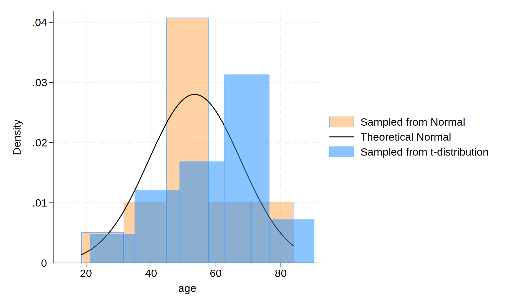

Methods: This website is a practice for using dyndoc to transfer do file html
. cls
.
. clear
.
. set obs 30
.
.
. gen age=(rnormal()*15)+57
.
. gen age_t=(rt(_N)*15)+57
.
. hist age, ///
> fcolor(orange%40) /// simulated normal
> addplot(hist age_t, fcolor(midblue%50)) /// simulated t-distributio
> normal /// theoretical normal
> legend(on ///
> lab(1 "Sampled from Normal") ///
> lab(2 "Theoretical Normal") ///
> lab(3 "Sampled from t-distribution") ///
> )
.
.
. graph export hist_age.png, replace

**Results:**
We found that the shapes of the graphs are different. Then, they made do-file which will be converted to html by dyndoc. They also got used to Greek symbols in the result section like
$\text{Age, years} \sim \mathcal{N}(\mu=57,\,\sigma^{2}=225)$
**Conclusions:**
In walking you through syntax, do-file creation, queued commands, generated results, through to embedding neatly formatted output in
.html, we believe you now have a sense of what that Stata might offer you. These ideas can be generalized to embedding results
in .xlsx, .log, .dta, .docx, etc.